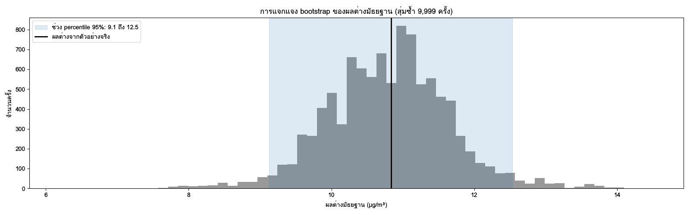

13 สถิติเชิงพรรณนาและการอนุมานเชิงสำรวจ
กราฟในส่วนที่ 4 ทำให้เห็นรูปแบบ เช่น ภาคเหนือดูสูงกว่าภาคอื่นในฤดูแล้ง แต่คำว่า “ดูสูงกว่า” ยังไม่พอสำหรับรายงาน ผู้อ่านจะถามต่อว่า สูงกว่าเท่าใด ตัวเลขนั้นแน่นอนแค่ไหน และความต่างที่เห็นอาจเกิดจากความบังเอิญได้หรือไม่ บทนี้ให้เครื่องมือตอบคำถามเหล่านี้ ตั้งแต่การสรุปการแจกแจงด้วยตัวเลขที่ทนทานต่อค่าผิดปกติ ไปจนถึงช่วงความเชื่อมั่น การทดสอบสมมติฐาน ขนาดอิทธิพล และวิธี resampling
คำว่า “เชิงสำรวจ” ในชื่อบทสำคัญ บทที่ 4 แยกการวิเคราะห์เชิงสำรวจออกจากเชิงยืนยัน และกำหนดให้ข้อมูลปี ค.ศ. 2020–2023 เป็นช่วงสำรวจ ตัวเลขทางสถิติที่คำนวณจากข้อมูลช่วงนี้เป็น เครื่องมือช่วยคิด ไม่ใช่หลักฐานยืนยัน p-value ที่ได้จากการทดสอบสมมติฐานที่ตั้งขึ้นหลังดูกราฟ ไม่มีความหมายแบบเดียวกับ p-value ของสมมติฐานที่ลงทะเบียนไว้ล่วงหน้า บทนี้จึงเน้นทั้งวิธีคำนวณและข้อจำกัดของการตีความไปพร้อมกัน
วัตถุประสงค์การเรียนรู้
เมื่อจบบทนี้ ผู้อ่านสามารถ
- อธิบายรูปร่างของการแจกแจงด้วยตำแหน่ง การกระจาย และความเบ้ และเลือกสถิติสรุปที่เหมาะสม
- ใช้ robust statistics สรุปข้อมูลที่มีค่าผิดปกติ และอธิบายเหตุผลด้วยแนวคิด breakdown point
- คำนวณและตีความช่วงความเชื่อมั่น และอธิบายความสัมพันธ์ระหว่างประชากร ตัวอย่าง และหน่วยของการวิเคราะห์
- เลือกการทดสอบแบบ parametric หรือ non-parametric ที่เหมาะกับข้อมูล และรายงาน effect size คู่กับ p-value
- ใช้ bootstrap และ permutation test เมื่อสมมติฐานของวิธีดั้งเดิมไม่เป็นจริง
- ปรับ p-value สำหรับการเปรียบเทียบหลายครั้ง
- ระบุกับดักของสหสัมพันธ์ ได้แก่ Simpson’s paradox และ ecological fallacy ในข้อมูลของตน
13.1 การแจกแจงและรูปร่างของข้อมูล
สามคำถามเกี่ยวกับการแจกแจง
การแจกแจง (distribution) ของตัวแปรหนึ่งบอกว่าค่าแต่ละช่วงเกิดขึ้นบ่อยเพียงใด การสรุปการแจกแจงด้วยตัวเลขตอบคำถามสามข้อ
| คำถาม | ชื่อทางสถิติ | ตัววัดที่ใช้บ่อย |
|---|---|---|
| ค่าส่วนใหญ่อยู่ตรงไหน | ตำแหน่ง (location) | ค่าเฉลี่ย มัธยฐาน |
| ค่ากระจายกว้างเพียงใด | การกระจาย (spread) | ส่วนเบี่ยงเบนมาตรฐาน IQR MAD |
| การแจกแจงสมมาตรหรือไม่ หางยาวเพียงใด | รูปร่าง (shape) | ความเบ้ (skewness) ความโด่ง (kurtosis) |
import duckdb
import numpy as np
import pandas as pd
from scipy import stats
con = duckdb.connect("data/pm25.duckdb", read_only=True)
daily = con.execute("""
SELECT d.station_id, d.date, d.pm25_mean, s.region
FROM daily_pm25_clean AS d JOIN stations AS s USING (station_id)
WHERE d.is_complete AND d.date < DATE '2024-01-01'
""").df()
x = daily["pm25_mean"]
print(x.describe().round(1))
print("skewness", round(stats.skew(x), 2), "excess kurtosis", round(stats.kurtosis(x), 2))# ผลลัพธ์ (ตัวอย่าง)
# ข้อมูลสังเคราะห์ ไม่ใช่ข้อมูล Air4Thai จริง
count 11651.0
mean 24.5
std 10.7
min 5.6
25% 17.6
50% 22.5
75% 28.7
max 116.7
skewness 1.68 excess kurtosis 4.81การแจกแจงของ PM2.5 เบ้ขวา
ผลลัพธ์ข้างต้นมีลักษณะที่พบเสมอในข้อมูลความเข้มข้นของมลพิษ ค่าเฉลี่ย (24.5) มากกว่ามัธยฐาน (22.5) ระยะจากควอร์ไทล์ที่สามถึงค่าสูงสุด (28.7 ถึง 116.7) ยาวกว่าระยะจากค่าต่ำสุดถึงควอร์ไทล์ที่หนึ่งมาก และความเบ้เป็นบวก การแจกแจงแบบนี้เรียกว่า เบ้ขวา (right-skewed) วันส่วนใหญ่มีค่าปานกลาง แต่มีวันจำนวนหนึ่งที่สูงมาก ซึ่งดึงค่าเฉลี่ยขึ้น
เหตุผลเชิงกายภาพคือ ความเข้มข้นของฝุ่นเกิดจากหลายปัจจัยที่ คูณ กัน เช่น ปริมาณการเผา ความสูงของชั้นผสมอากาศ และความเร็วลม เมื่อปัจจัยหลายตัวคูณกัน ผลลัพธ์มักมีการแจกแจงใกล้เคียง log-normal (Ott 1990) ความเข้าใจนี้มีผลต่อการเลือกสถิติในหัวข้อถัดไป

ความเบ้และความโด่ง
ความเบ้ (skewness) วัดความไม่สมมาตร ค่าบวกหมายถึงหางยาวทางขวา ค่าลบหมายถึงหางยาวทางซ้าย และค่าใกล้ศูนย์หมายถึงใกล้สมมาตร ความโด่งส่วนเกิน (excess kurtosis) วัดความหนักของหางเทียบกับการแจกแจงปกติ ค่าบวกหมายถึงมีค่าสุดโต่งบ่อยกว่าการแจกแจงปกติ ซึ่งสำคัญต่อข้อมูล PM2.5 เพราะวันที่ค่าสูงมากคือวันที่มีผลต่อสุขภาพมากที่สุด
ข้อควรระวังคือ ตัวเลขสรุปไม่ได้แทนกราฟ บทที่ 1 แสดงด้วย Anscombe’s quartet ว่าข้อมูลที่มีสถิติสรุปเหมือนกันมีรูปร่างต่างกันได้มาก การสรุปการแจกแจงจึงควรทำคู่กับ histogram หรือ ECDF (หัวข้อ 11.4) เสมอ
13.2 robust statistics: median, IQR, MAD, trimmed mean
ปัญหาของค่าเฉลี่ยและส่วนเบี่ยงเบนมาตรฐาน
ค่าเฉลี่ยและส่วนเบี่ยงเบนมาตรฐานใช้ค่าทุกค่าในการคำนวณ ค่าผิดปกติเพียงค่าเดียวจึงดึงผลไปได้ไกล ลองนึกถึงค่าผิดพลาดจากเครื่องวัดที่ไม่ถูกตรวจพบในบทที่ 9 เช่น ค่า 5,000 µg/m³ เพียงหนึ่งแถว
contaminated = x.copy()
contaminated.iloc[0] = 5000
print(round(contaminated.mean(), 2), round(contaminated.median(), 2))# ผลลัพธ์ (ตัวอย่าง)
# ข้อมูลสังเคราะห์ ไม่ใช่ข้อมูล Air4Thai จริง
24.93 22.51ค่าผิดพลาดเพียงหนึ่งแถวในกว่าหมื่นแถวเปลี่ยนค่าเฉลี่ยไปเกือบ 0.5 µg/m³ ขณะที่มัธยฐานไม่เปลี่ยนเลย ถ้าข้อมูลมีน้อยกว่านี้ เช่น ค่าเฉลี่ยรายเดือนของสถานีเดียวจาก 30 วัน ผลจะรุนแรงกว่ามาก
breakdown point
แนวคิดที่ใช้เปรียบเทียบความทนทานคือ breakdown point คือสัดส่วนของข้อมูลที่ต้องเปลี่ยนเป็นค่าที่ผิดอย่างไม่มีขอบเขต จึงจะทำให้สถิตินั้นผิดไปได้ไม่มีขอบเขต (Huber และ Ronchetti 2009) ค่าเฉลี่ยมี breakdown point เท่ากับ 0 (ค่าเดียวก็พอ) ส่วนมัธยฐานมี breakdown point เท่ากับ 50% ซึ่งสูงที่สุดที่เป็นไปได้
| สถิติ | วัดอะไร | breakdown point | หมายเหตุ |
|---|---|---|---|
| ค่าเฉลี่ย | ตำแหน่ง | 0% | ใช้ค่าทุกค่า มีประสิทธิภาพสูงเมื่อข้อมูลปกติ |
| มัธยฐาน | ตำแหน่ง | 50% | ค่ากลางเมื่อเรียงข้อมูล |
| trimmed mean 10% | ตำแหน่ง | 10% | ตัดค่าต่ำสุดและสูงสุดอย่างละ 10% แล้วเฉลี่ย |
| ส่วนเบี่ยงเบนมาตรฐาน | การกระจาย | 0% | ไวต่อค่าผิดปกติมากเพราะยกกำลังสอง |
| IQR | การกระจาย | 25% | \(Q_3 - Q_1\) ครอบคลุมข้อมูลครึ่งกลาง |
| MAD | การกระจาย | 50% | มัธยฐานของ \(\lvert x_i - \text{มัธยฐาน} \rvert\) |
MAD
MAD (median absolute deviation) นิยามดังนี้
\[ \text{MAD} = \operatorname{median}_i \left( \lvert x_i - \tilde{x} \rvert \right) \tag{13.1}\]
โดยที่ \(x_i\) คือค่าแต่ละค่า และ \(\tilde{x}\) คือมัธยฐานของข้อมูล ถ้าต้องการเปรียบเทียบกับส่วนเบี่ยงเบนมาตรฐาน ให้คูณด้วย 1.4826 ซึ่งทำให้ MAD ประมาณส่วนเบี่ยงเบนมาตรฐานได้เมื่อข้อมูลมีการแจกแจงปกติ เช่น ข้อมูลห้าค่า 20, 22, 23, 25, 60 µg/m³ มีมัธยฐาน 23 ค่าเบี่ยงเบนสัมบูรณ์คือ 3, 1, 0, 2, 37 มัธยฐานของค่าเหล่านี้คือ MAD = 2 และ MAD ที่ปรับสเกลคือ \(2 \times 1.4826 \approx 3.0\) ขณะที่ส่วนเบี่ยงเบนมาตรฐานของข้อมูลชุดเดียวกันประมาณ 17 เพราะค่า 60 เพียงค่าเดียว
q1, q3 = np.percentile(x, [25, 75])
summary = pd.Series({
"mean": x.mean(), "median": x.median(), "trimmed_mean_10": stats.trim_mean(x, 0.1),
"sd": x.std(), "iqr": q3 - q1, "mad_scaled": stats.median_abs_deviation(x, scale="normal"),
})
print(summary.round(2))# ผลลัพธ์ (ตัวอย่าง)
# ข้อมูลสังเคราะห์ ไม่ใช่ข้อมูล Air4Thai จริง
mean 24.50
median 22.51
trimmed_mean_10 23.18
sd 10.73
iqr 11.13
mad_scaled 8.02robust statistics ใน DuckDB
DuckDB มีฟังก์ชันรวมสำหรับ robust statistics ครบ ทำให้สรุปแยกกลุ่มได้ในคำสั่งเดียว
SELECT s.region, COUNT(*) AS n,
ROUND(AVG(d.pm25_mean), 1) AS mean,
ROUND(MEDIAN(d.pm25_mean), 1) AS median,
ROUND(QUANTILE_CONT(d.pm25_mean, 0.75) - QUANTILE_CONT(d.pm25_mean, 0.25), 1) AS iqr,
ROUND(MAD(d.pm25_mean), 1) AS mad
FROM daily_pm25_clean AS d JOIN stations AS s USING (station_id)
WHERE d.is_complete AND d.date < DATE '2024-01-01'
GROUP BY s.region
ORDER BY median DESC;# ผลลัพธ์ (ตัวอย่าง)
# ข้อมูลสังเคราะห์ ไม่ใช่ข้อมูล Air4Thai จริง
region n mean median iqr mad
0 กลาง 2922 26.3 24.9 9.6 4.6
1 เหนือ 4357 27.7 23.8 11.9 5.3
2 ตะวันออกเฉียงเหนือ 2919 23.9 22.3 9.7 4.7
3 ใต้ 1453 12.7 12.3 4.1 2.1ผลลัพธ์นี้แสดงจุดที่น่าสนใจ ภาคเหนือมีค่าเฉลี่ยสูงที่สุด แต่ภาคกลางมีมัธยฐานสูงที่สุด แปลว่าภาคเหนือมีหางทางขวายาวกว่า คือมีวันที่ค่าสูงมากจำนวนหนึ่งในฤดูฝุ่น แต่วันทั่วไปไม่ได้สูงกว่าภาคกลาง ลำดับของภาคจึงขึ้นกับว่าใช้สถิติใด และ สถิติที่เลือกต้องตรงกับคำถาม ถ้าคำถามคือ “วันทั่วไปเป็นอย่างไร” ใช้มัธยฐาน ถ้าคำถามเกี่ยวกับภาระมลพิษรวมหรือความเสี่ยงจากวันที่สูงมาก ค่าเฉลี่ยหรือเปอร์เซ็นไทล์สูง เช่น P95 ตอบได้ตรงกว่า นี่คือเหตุผลที่ questions.md ต้องระบุตัวชี้วัดไว้ล่วงหน้าตามบทที่ 4
ข้อสังเกตเรื่องฟังก์ชัน MAD() ของ DuckDB คืนค่า MAD ที่ยังไม่ปรับสเกล ส่วน stats.median_abs_deviation(x, scale="normal") ของ SciPy ปรับสเกลด้วย 1.4826 แล้ว ตัวเลขจากสองเครื่องมือจึงต่างกัน ต้องระบุในรายงานว่าใช้แบบใด
13.3 การแปลงข้อมูล: log, Box-Cox
ทำไมต้องแปลง
การแปลงข้อมูลด้วยฟังก์ชันทางคณิตศาสตร์มีเป้าหมายสามข้อ ข้อแรกเพื่อ ลดความเบ้ ให้การแจกแจงใกล้สมมาตร ซึ่งทำให้วิธีทางสถิติหลายวิธีที่สมมติการแจกแจงปกติใช้ได้ดีขึ้น ข้อสองเพื่อ ทำให้การกระจายคงที่ ระหว่างกลุ่ม ในข้อมูล PM2.5 กลุ่มที่มีค่าเฉลี่ยสูงมักมีการกระจายสูงด้วย การแปลง log ทำให้การกระจายของแต่ละกลุ่มใกล้กันขึ้น ข้อสามเพื่อ เปลี่ยนความสัมพันธ์แบบคูณเป็นแบบบวก ซึ่งตีความง่ายกว่า
การแปลง log
การแปลงที่ใช้บ่อยที่สุดกับข้อมูลความเข้มข้นคือ log ธรรมชาติ ความต่างในสเกล log แปลเป็นอัตราส่วนในสเกลเดิม ถ้า \(\log(a) - \log(b) = 0.2\) แปลว่า \(a/b = e^{0.2} \approx 1.22\) คือ \(a\) สูงกว่า \(b\) ประมาณ 22%
print("skewness after log", round(stats.skew(np.log(x)), 2))# ผลลัพธ์ (ตัวอย่าง)
# ข้อมูลสังเคราะห์ ไม่ใช่ข้อมูล Air4Thai จริง
skewness after log 0.08ข้อควรระวังสองข้อ ข้อแรก log ของศูนย์หรือค่าลบไม่นิยาม ค่าเฉลี่ยรายวันของ PM2.5 แทบไม่เคยเป็นศูนย์ แต่ค่ารายชั่วโมงอาจเป็นศูนย์ได้ การบวกค่าคงที่ก่อนแปลง เช่น \(\log(x + 1)\) ใช้ได้ แต่ค่าคงที่ที่เลือกมีผลต่อผล และต้องรายงาน ข้อสอง ค่าเฉลี่ยของ log ไม่ใช่ log ของค่าเฉลี่ย การแปลงกลับด้วย \(e^{\overline{\log x}}\) ได้ ค่าเฉลี่ยเรขาคณิต (geometric mean) ซึ่งต่ำกว่าค่าเฉลี่ยเลขคณิตเสมอเมื่อข้อมูลไม่คงที่ การรายงานค่าเฉลี่ยเรขาคณิตโดยเรียกว่า “ค่าเฉลี่ย” ทำให้ผู้อ่านเข้าใจผิด และเทียบกับมาตรฐาน 37.5 µg/m³ ซึ่งนิยามบนค่าเฉลี่ยเลขคณิตไม่ได้
Box-Cox
การแปลง Box-Cox เป็นตระกูลของการแปลงกำลังที่มีพารามิเตอร์ \(\lambda\) (Box และ Cox 1964)
\[ y^{(\lambda)} = \begin{cases} \dfrac{y^{\lambda} - 1}{\lambda}, & \lambda \neq 0 \\[6pt] \log y, & \lambda = 0 \end{cases} \tag{13.2}\]
โดยที่ \(y\) คือข้อมูลที่ต้องเป็นบวก และ \(\lambda\) คือพารามิเตอร์ที่เลือกให้ข้อมูลหลังแปลงใกล้การแจกแจงปกติที่สุด (โดยวิธี maximum likelihood) ค่า \(\lambda = 1\) คือไม่แปลง (นอกจากเลื่อนค่า) \(\lambda = 0.5\) ใกล้เคียงรากที่สอง และ \(\lambda = 0\) คือ log
transformed, lam = stats.boxcox(x)
print("lambda", round(lam, 3), "skewness", round(stats.skew(transformed), 2))# ผลลัพธ์ (ตัวอย่าง)
# ข้อมูลสังเคราะห์ ไม่ใช่ข้อมูล Air4Thai จริง
lambda -0.058 skewness -0.0ค่า \(\lambda\) ที่ได้ใกล้ศูนย์มาก ยืนยันว่าการแปลง log เหมาะกับข้อมูลชุดนี้ ในทางปฏิบัติ ถ้า \(\lambda\) ใกล้ค่าที่ตีความง่าย เช่น 0 หรือ 0.5 ควรใช้การแปลงที่ตีความง่ายนั้นแทนค่า \(\lambda\) ที่คำนวณได้ เพราะผลต่างในสเกล log แปลเป็นอัตราส่วนได้ ส่วนผลต่างในสเกล \(y^{-0.058}\) ไม่มีความหมายที่สื่อสารได้
13.4 ประชากร ตัวอย่าง และช่วงความเชื่อมั่น
ประชากรคืออะไรในข้อมูล PM2.5
การอนุมานทางสถิติเริ่มจากคำถามที่ฟังดูง่ายแต่มักถูกข้าม: เรากำลังอนุมานไปยังประชากรใด ข้อมูล Air4Thai ไม่ได้เป็นตัวอย่างสุ่มจากประชากรที่นิยามชัดเจน สถานีถูกตั้งในตำแหน่งที่หน่วยงานเลือก มักอยู่ในเขตเมืองหรือพื้นที่ที่มีปัญหา และวันที่มีในข้อมูลคือวันที่เครื่องทำงาน ซึ่งไม่ได้สุ่ม (บทที่ 10)
ประชากรที่สมเหตุสมผลจึงต้องนิยามอย่างระมัดระวัง เช่น “สภาพอากาศ ณ ตำแหน่งของสถานีที่มีอยู่ ในฤดูแล้งตามสภาพภูมิอากาศช่วงนี้” ซึ่งต่างจาก “คุณภาพอากาศของภาคเหนือทั้งภาค” มาก การอนุมานไปยังพื้นที่ที่ไม่มีสถานีต้องใช้วิธีเชิงพื้นที่ในบทที่ 17 และมีความไม่แน่นอนสูงกว่า
หน่วยของการวิเคราะห์และความเป็นอิสระ
วิธีทางสถิติดั้งเดิมส่วนใหญ่สมมติว่า ข้อมูลแต่ละหน่วยเป็นอิสระต่อกัน ค่าเฉลี่ยรายวันของ PM2.5 ละเมิดสมมติฐานนี้อย่างรุนแรง วันที่ฝุ่นสูงมักตามด้วยวันที่ฝุ่นสูง เพราะสภาพอากาศเปลี่ยนช้า ในข้อมูลสังเคราะห์ของหนังสือ สหสัมพันธ์ระหว่างค่าของวันหนึ่งกับวันถัดไปของสถานีเดียวกันประมาณ 0.75 (บทที่ 14 อธิบายเรื่อง autocorrelation) สถานีที่อยู่ใกล้กันก็มีค่าสัมพันธ์กันเช่นกัน (บทที่ 17)
ผลของการละเมิดคือ ถ้านำค่ารายวันหลายพันค่ามาคำนวณเหมือนเป็นอิสระ ความคลาดเคลื่อนมาตรฐานจะต่ำเกินจริงมาก ช่วงความเชื่อมั่นแคบเกินจริง และ p-value เล็กเกินจริง นักวิเคราะห์จะ “มั่นใจ” ในข้อสรุปมากกว่าที่ข้อมูลรองรับ วิธีแก้ที่ง่ายและได้ผลคือ เลือกหน่วยของการวิเคราะห์ที่ใกล้เคียงอิสระ เช่น สรุปเป็นค่าต่อสถานีต่อปีก่อน แล้วใช้ค่าเหล่านั้นในการอนุมาน
station_year = con.execute("""
SELECT s.region, d.station_id, YEAR(d.date) AS year, AVG(d.pm25_mean) AS pm25_dry
FROM daily_pm25_clean AS d JOIN stations AS s USING (station_id)
WHERE d.is_complete AND d.date < DATE '2024-01-01' AND MONTH(d.date) IN (2, 3, 4)
GROUP BY s.region, d.station_id, YEAR(d.date)
""").df()
north = station_year.query("region == 'เหนือ'")["pm25_dry"]
central = station_year.query("region == 'กลาง'")["pm25_dry"]ตาราง station_year มีหนึ่งแถวต่อสถานีต่อปี เก็บค่าเฉลี่ยฤดูแล้ง (กุมภาพันธ์ถึงเมษายน) แม้ค่าของสถานีเดียวกันในปีต่างกันยังสัมพันธ์กันอยู่บ้าง แต่ใกล้อิสระกว่าค่ารายวันมาก ข้อมูลสังเคราะห์ของหนังสือมีเพียงไม่กี่สถานีต่อภาค ข้อมูลจริงมีมากกว่านี้
ช่วงความเชื่อมั่น
ช่วงความเชื่อมั่น (confidence interval) 95% ของค่าเฉลี่ยคำนวณจาก
\[ \bar{x} \pm t_{0.975,\, n-1} \cdot \frac{s}{\sqrt{n}} \tag{13.3}\]
โดยที่ \(\bar{x}\) คือค่าเฉลี่ยของตัวอย่าง \(s\) คือส่วนเบี่ยงเบนมาตรฐานของตัวอย่าง \(n\) คือขนาดตัวอย่าง \(s/\sqrt{n}\) คือความคลาดเคลื่อนมาตรฐาน (standard error) และ \(t_{0.975,\, n-1}\) คือค่าวิกฤตของการแจกแจง t ที่มีองศาอิสระ \(n - 1\)
m, se = north.mean(), stats.sem(north)
print(len(north), round(m, 1), np.round(stats.t.interval(0.95, len(north) - 1, loc=m, scale=se), 1))# ผลลัพธ์ (ตัวอย่าง)
# ข้อมูลสังเคราะห์ ไม่ใช่ข้อมูล Air4Thai จริง
12 44.0 [42.8 45.3]ตัวอย่างการคำนวณด้วยมือ ภาคเหนือมี 12 สถานี-ปี ค่าเฉลี่ย 44.0 ส่วนเบี่ยงเบนมาตรฐาน 2.0 ความคลาดเคลื่อนมาตรฐานคือ \(2.0 / \sqrt{12} \approx 0.58\) ค่าวิกฤต \(t_{0.975,\,11} \approx 2.20\) ช่วงความเชื่อมั่นจึงเป็น \(44.0 \pm 2.20 \times 0.58 \approx 44.0 \pm 1.3\) หรือ 42.7 ถึง 45.3 (ต่างจากผลของโค้ดเล็กน้อยเพราะการปัดเศษ)
การตีความช่วงความเชื่อมั่นอย่างถูกต้อง
ช่วงความเชื่อมั่น 95% ไม่ได้ แปลว่า “ค่าจริงมีความน่าจะเป็น 95% ที่จะอยู่ในช่วง 42.8 ถึง 45.3” ในกรอบความคิดแบบความถี่ ค่าจริงเป็นค่าคงที่ ไม่ใช่ตัวแปรสุ่ม ความหมายที่ถูกต้องคือ ถ้าทำซ้ำกระบวนการสุ่มตัวอย่างและคำนวณช่วงแบบนี้หลายครั้ง ประมาณ 95% ของช่วงที่ได้จะครอบคลุมค่าจริง (Greenland และคณะ 2016) ในการสื่อสารทั่วไป การบอกว่า “ข้อมูลสอดคล้องกับค่าเฉลี่ยตั้งแต่ประมาณ 43 ถึง 45 µg/m³” เป็นการตีความที่ใช้ได้และไม่ผิด
ข้อควรจำที่สำคัญกว่าคือ ช่วงความเชื่อมั่นสะท้อนเฉพาะ ความไม่แน่นอนจากการสุ่มตัวอย่าง ไม่ได้รวมความไม่แน่นอนจากการเลือกตำแหน่งสถานี การจัดการข้อมูลสูญหาย หรือความคลาดเคลื่อนของเครื่องวัด ช่วงที่แคบจึงไม่ได้รับประกันว่าข้อสรุปถูกต้อง ถ้าข้อมูลมีอคติเชิงระบบ
13.5 การทดสอบสมมติฐาน: parametric และ non-parametric
ตรรกะของการทดสอบ
การทดสอบสมมติฐานเริ่มจาก สมมติฐานว่าง (null hypothesis, \(H_0\)) เช่น “ค่าเฉลี่ยฤดูแล้งของภาคเหนือและภาคกลางเท่ากัน” แล้วถามว่า ถ้า \(H_0\) เป็นจริง ข้อมูลที่ต่างกันอย่างน้อยเท่าที่เห็นจะเกิดขึ้นได้บ่อยเพียงใด สัดส่วนนี้คือ p-value ค่า p-value ต่ำแปลว่าข้อมูลไม่ค่อยสอดคล้องกับ \(H_0\)
สมาคมสถิติอเมริกันออกแถลงการณ์ในปี ค.ศ. 2016 เพื่อแก้ความเข้าใจผิดเกี่ยวกับ p-value ที่แพร่หลาย (Wasserstein และ Lazar 2016) ประเด็นสำคัญได้แก่ p-value ไม่ได้วัดความน่าจะเป็นที่ \(H_0\) เป็นจริง ไม่ได้วัดขนาดหรือความสำคัญของผล และการตัดสินใจทางวิทยาศาสตร์ไม่ควรขึ้นกับว่า p-value ข้ามเกณฑ์ 0.05 หรือไม่เพียงอย่างเดียว
เลือกการทดสอบ
| สถานการณ์ | parametric | non-parametric | หมายเหตุ |
|---|---|---|---|
| สองกลุ่มอิสระ | Welch’s t-test | Mann-Whitney U | ใช้ Welch เป็นค่าเริ่มต้น ไม่ต้องสมมติความแปรปรวนเท่ากัน |
| สองกลุ่มจับคู่ | paired t-test | Wilcoxon signed-rank | เช่น สถานีเดียวกันในสองปี |
| มากกว่าสองกลุ่ม | one-way ANOVA (Welch) | Kruskal-Wallis | ถ้าผลมีนัยสำคัญ ต้องเปรียบเทียบรายคู่ต่อ |
| ความสัมพันธ์ของสองตัวแปรต่อเนื่อง | Pearson | Spearman | หัวข้อ 13.9 |
การทดสอบแบบ parametric สมมติรูปแบบของการแจกแจง เช่น t-test สมมติว่าค่าเฉลี่ยของตัวอย่างมีการแจกแจงใกล้ปกติ ซึ่งเป็นจริงโดยประมาณเมื่อข้อมูลไม่เบ้มากหรือตัวอย่างใหญ่พอ (central limit theorem) การทดสอบแบบ non-parametric ไม่สมมติรูปแบบของการแจกแจง ส่วนใหญ่ทำงานกับลำดับ (rank) ของข้อมูล จึงทนต่อความเบ้และค่าผิดปกติ แต่ตอบคำถามที่ต่างออกไปเล็กน้อย Mann-Whitney U ไม่ได้ทดสอบว่ามัธยฐานเท่ากัน แต่ทดสอบว่าค่าจากกลุ่มหนึ่งมีแนวโน้มสูงกว่าอีกกลุ่มหรือไม่
print(stats.ttest_ind(north, central, equal_var=False)) # Welch's t-test
print(stats.mannwhitneyu(north, central, alternative="two-sided"))# ผลลัพธ์ (ตัวอย่าง)
# ข้อมูลสังเคราะห์ ไม่ใช่ข้อมูล Air4Thai จริง
TtestResult(statistic=16.65, pvalue=3.94e-12, df=17.4)
MannwhitneyuResult(statistic=96.0, pvalue=1.59e-05)(ผลลัพธ์จัดรูปแบบตัวเลขให้อ่านง่าย) ทั้งสองการทดสอบให้ p-value ต่ำมาก ข้อมูลไม่สอดคล้องกับสมมติฐานว่าค่าฤดูแล้งของสองภาคเท่ากัน ค่า U = 96 เท่ากับ \(12 \times 8\) ซึ่งเป็นค่าสูงสุดที่เป็นไปได้ แปลว่าทุกสถานี-ปีของภาคเหนือสูงกว่าทุกสถานี-ปีของภาคกลาง ข้อมูลสังเคราะห์ของหนังสือสร้างให้ภาคต่างกันชัดเจนกว่าข้อมูลจริง
การทดสอบที่ไม่พบความต่าง
เปรียบเทียบภาคกลางกับภาคตะวันออกเฉียงเหนือด้วยวิธีเดียวกัน ได้ Welch’s t-test p = 0.73 และ Mann-Whitney U p = 0.72 ผลนี้ ไม่ได้ แปลว่าสองภาคมีค่าเท่ากัน แปลเพียงว่าข้อมูลไม่มีหลักฐานพอจะบอกว่าต่างกัน ซึ่งอาจเป็นเพราะไม่ต่างจริง หรือเพราะตัวอย่างน้อยเกินไป (ที่นี่มีเพียง 8 สถานี-ปีต่อภาค) ความต่างระหว่าง “ไม่มีหลักฐานของความต่าง” กับ “มีหลักฐานว่าไม่ต่าง” เป็นหนึ่งในความเข้าใจผิดที่พบบ่อยที่สุด (Altman และ Bland 1995) หัวข้อถัดไปแสดงว่าช่วงความเชื่อมั่นของขนาดผลช่วยแยกสองกรณีนี้ได้
p-value ในการวิเคราะห์เชิงสำรวจ
ข้อควรจำที่สำคัญที่สุดของบทนี้ p-value มีความหมายตามนิยามเฉพาะเมื่อสมมติฐานและวิธีวิเคราะห์ถูกกำหนด ก่อน ดูข้อมูล ถ้านักวิเคราะห์ดูกราฟก่อน เห็นว่าภาคเหนือดูสูง แล้วจึงทดสอบ p-value ที่ได้จะต่ำกว่าที่ควรเป็น เพราะการทดสอบถูกเลือกเพราะข้อมูลดูน่าสนใจ (garden of forking paths ในบทที่ 4) ในการวิเคราะห์ข้อมูลช่วงสำรวจ ให้ถือว่า p-value เป็นตัวชี้วัดคร่าว ๆ ว่ารูปแบบใดควรตรวจสอบต่อในข้อมูลช่วงยืนยัน ไม่ใช่หลักฐาน
13.6 effect size: ทำไม p-value อย่างเดียวไม่พอ
p-value ผสมขนาดผลกับขนาดตัวอย่าง
p-value ขึ้นกับสองสิ่งพร้อมกัน คือ ขนาดของผลและขนาดของตัวอย่าง ผลที่เล็กมากจนไม่มีความหมายในทางปฏิบัติก็ได้ p-value ต่ำได้ ถ้าตัวอย่างใหญ่พอ เช่น ถ้านำค่ารายชั่วโมงหลายล้านค่ามาทดสอบ ความต่าง 0.1 µg/m³ ระหว่างสองภาคก็อาจ “มีนัยสำคัญทางสถิติ” ทั้งที่ไม่มีผลต่อสุขภาพหรือนโยบายเลย ในทางกลับกัน ผลที่ใหญ่และสำคัญอาจได้ p-value สูงถ้าตัวอย่างเล็ก effect size (ขนาดอิทธิพล) แยกขนาดของผลออกมาวัดโดยตรง (Sullivan และ Feinn 2012)
effect size ในหน่วยเดิม
effect size ที่สื่อสารได้ดีที่สุดมักเป็น ความต่างในหน่วยเดิม พร้อมช่วงความเชื่อมั่น เช่น “ค่าเฉลี่ยฤดูแล้งของภาคเหนือสูงกว่าภาคกลางประมาณ 11 µg/m³ (ช่วงความเชื่อมั่น 95% ประมาณ 9 ถึง 13 µg/m³)” ผู้อ่านเทียบกับมาตรฐาน 37.5 µg/m³ ได้ทันทีว่าความต่างนี้ใหญ่เพียงใด
effect size แบบมาตรฐาน
เมื่อต้องเปรียบเทียบผลข้ามตัวแปรที่มีหน่วยต่างกัน ใช้ effect size แบบมาตรฐาน ตัวที่ใช้บ่อยคือ Cohen’s d ซึ่งแบ่งความต่างของค่าเฉลี่ยด้วยส่วนเบี่ยงเบนมาตรฐานรวม และ Hedges’ g ซึ่งปรับแก้ความเอนเอียงเมื่อตัวอย่างเล็ก
\[ g = \frac{\bar{x}_1 - \bar{x}_2}{s_p}\left(1 - \frac{3}{4(n_1 + n_2) - 9}\right), \qquad s_p = \sqrt{\frac{(n_1 - 1)s_1^2 + (n_2 - 1)s_2^2}{n_1 + n_2 - 2}} \tag{13.4}\]
โดยที่ \(\bar{x}_1, \bar{x}_2\) คือค่าเฉลี่ยของสองกลุ่ม \(s_1, s_2\) คือส่วนเบี่ยงเบนมาตรฐาน \(n_1, n_2\) คือขนาดตัวอย่าง และ \(s_p\) คือส่วนเบี่ยงเบนมาตรฐานรวม (pooled) สำหรับข้อมูลที่เบ้หรือมีค่าผิดปกติ Cliff’s delta เป็นทางเลือกแบบ non-parametric คือความน่าจะเป็นที่ค่าจากกลุ่มที่หนึ่งสูงกว่ากลุ่มที่สอง ลบด้วยความน่าจะเป็นที่ต่ำกว่า มีค่าตั้งแต่ −1 ถึง 1 (Cliff 1993)
def hedges_g(a: pd.Series, b: pd.Series) -> float:
na, nb = len(a), len(b)
sp = np.sqrt(((na - 1) * a.var(ddof=1) + (nb - 1) * b.var(ddof=1)) / (na + nb - 2))
return (a.mean() - b.mean()) / sp * (1 - 3 / (4 * (na + nb) - 9))
def cliffs_delta(a: pd.Series, b: pd.Series) -> float:
a, b = np.asarray(a), np.asarray(b)
return (a[:, None] > b[None, :]).mean() - (a[:, None] < b[None, :]).mean()
print(round(hedges_g(north, central), 2), round(cliffs_delta(north, central), 2))# ผลลัพธ์ (ตัวอย่าง)
# ข้อมูลสังเคราะห์ ไม่ใช่ข้อมูล Air4Thai จริง
6.47 1.0ค่า g = 6.47 ใหญ่มากผิดปกติ เพราะข้อมูลสังเคราะห์มีความแปรปรวนภายในภาคต่ำ ในข้อมูลจริง ความแปรปรวนระหว่างสถานีและระหว่างปีสูงกว่านี้มาก Cohen เสนอเกณฑ์คร่าว ๆ ว่า d ประมาณ 0.2, 0.5 และ 0.8 คือผลเล็ก ปานกลาง และใหญ่ แต่เตือนเองว่าเกณฑ์นี้ควรใช้เมื่อไม่มีบริบทอื่นเท่านั้น (Cohen 1988) ในโดเมนคุณภาพอากาศ การตีความในหน่วย µg/m³ เทียบกับมาตรฐานมีความหมายกว่ามาก
รายงานอะไร
| องค์ประกอบ | ตัวอย่าง |
|---|---|
| ขนาดผลในหน่วยเดิม | ภาคเหนือสูงกว่าภาคกลาง 11.2 µg/m³ (ผลต่างมัธยฐาน) |
| ช่วงความเชื่อมั่นของขนาดผล | ช่วงความเชื่อมั่น 95% แบบ bootstrap: 9.4 ถึง 12.8 µg/m³ |
| หน่วยของการวิเคราะห์และขนาดตัวอย่าง | ค่าเฉลี่ยฤดูแล้งต่อสถานีต่อปี 12 และ 8 ค่า |
| การทดสอบและ p-value (ถ้าจำเป็น) | permutation test, p < 0.001 |
| ช่วงข้อมูลและสถานะ | ข้อมูลช่วงสำรวจ ค.ศ. 2020–2023 ต้องยืนยันด้วยข้อมูล ค.ศ. 2024–2025 |
สำหรับกรณีภาคกลางกับภาคตะวันออกเฉียงเหนือ ผลต่างมัธยฐานคือ 0.4 µg/m³ ช่วงความเชื่อมั่นแบบ bootstrap คือ −1.2 ถึง 1.4 µg/m³ ช่วงนี้ครอบคลุมศูนย์ และทั้งสองปลายมีขนาดเล็กเมื่อเทียบกับมาตรฐาน 37.5 µg/m³ จึงพูดได้ว่า ถ้า มีความต่าง ก็น่าจะเล็ก ซึ่งให้ข้อมูลมากกว่าการบอกเพียงว่า “ไม่มีนัยสำคัญ”
13.7 resampling: bootstrap และ permutation test ★
หัวข้อนี้ไม่ได้สอนในชั้นเรียน อ่านข้ามได้โดยไม่กระทบความเข้าใจบทถัดไป
แนวคิดของ bootstrap
สูตรช่วงความเชื่อมั่นใน สมการ 13.3 ใช้ได้กับค่าเฉลี่ยเมื่อสมมติฐานบางอย่างเป็นจริง แต่ถ้าต้องการช่วงความเชื่อมั่นของมัธยฐาน ผลต่างของมัธยฐาน หรือสัดส่วนวันเกินมาตรฐาน ไม่มีสูตรง่าย ๆ bootstrap ที่ Bradley Efron เสนอในปี ค.ศ. 1979 แก้ปัญหานี้ด้วยการคำนวณ (Efron 1979; Efron และ Tibshirani 1993) แนวคิดคือ ใช้ตัวอย่างที่มีเป็นตัวแทนของประชากร แล้วจำลองการสุ่มตัวอย่างซ้ำ
- สุ่มข้อมูลจากตัวอย่างเดิม แบบใส่คืน ให้ได้ขนาดเท่าเดิม (ค่าบางค่าถูกเลือกซ้ำ บางค่าไม่ถูกเลือก)
- คำนวณสถิติที่สนใจจากตัวอย่างที่สุ่มได้
- ทำซ้ำหลายพันครั้ง ได้การแจกแจงของสถิตินั้น
- ใช้เปอร์เซ็นไทล์ที่ 2.5 และ 97.5 ของการแจกแจงเป็นช่วงความเชื่อมั่น 95% (วิธี percentile)
rng = np.random.default_rng(42)
diff_median = lambda a, b: np.median(a) - np.median(b)
res = stats.bootstrap((north.to_numpy(), central.to_numpy()), diff_median,
n_resamples=9999, method="percentile", random_state=rng)
print(round(diff_median(north, central), 1), np.round(res.confidence_interval, 1))# ผลลัพธ์ (ตัวอย่าง)
# ข้อมูลสังเคราะห์ ไม่ใช่ข้อมูล Air4Thai จริง
11.2 [ 9.4 12.8]
ภาพที่ 13.2 แสดงลักษณะที่ควรสังเกต การแจกแจง bootstrap ของมัธยฐานจากตัวอย่างเล็กมีรูปร่างขรุขระ เพราะมัธยฐานของตัวอย่างที่สุ่มซ้ำมีค่าที่เป็นไปได้จำกัด ช่วงความเชื่อมั่นจาก bootstrap ในกรณีนี้จึงประมาณได้ไม่ดีนัก bootstrap ไม่ใช่เวทมนตร์ ทำงานได้ดีเมื่อตัวอย่างใหญ่พอที่จะเป็นตัวแทนของประชากร และสถิติที่สนใจไม่ขึ้นกับค่าเพียงไม่กี่ค่า ตัวเลือก method="BCa" ของ SciPy ปรับแก้ความเอนเอียงและความเบ้ของการแจกแจง bootstrap ซึ่งมักดีกว่าวิธี percentile เมื่อตัวอย่างไม่เล็กเกินไป
bootstrap กับข้อมูลที่ไม่อิสระ
bootstrap แบบพื้นฐานสุ่มแต่ละค่าแยกกัน จึงสมมติว่าข้อมูลเป็นอิสระต่อกันเหมือนวิธีดั้งเดิม ถ้านำค่ารายวันที่มี autocorrelation สูงมา bootstrap ทีละวัน ช่วงที่ได้จะแคบเกินจริง ทางแก้มีสองแนว แนวแรกคือเลือกหน่วยที่ใกล้อิสระก่อน เช่น สถานี-ปีในตัวอย่างข้างต้น แนวที่สองคือ block bootstrap ซึ่งสุ่มเป็นช่วงต่อเนื่อง เช่น ครั้งละหนึ่งเดือน เพื่อรักษาโครงสร้างความสัมพันธ์ภายในช่วงไว้ (Künsch 1989) หรือสุ่มทั้งสถานี (cluster bootstrap) เมื่อค่าภายในสถานีเดียวกันสัมพันธ์กัน
permutation test
permutation test ใช้แนวคิด resampling กับการทดสอบสมมติฐาน ถ้า \(H_0\) เป็นจริง คือภาคไม่มีผลต่อค่าฝุ่น ป้ายชื่อภาคก็เป็นเพียงป้ายที่สลับกันได้โดยไม่เปลี่ยนการแจกแจง วิธีทดสอบคือ
- คำนวณสถิติจากข้อมูลจริง เช่น ผลต่างของค่าเฉลี่ย
- สลับป้ายชื่อกลุ่มแบบสุ่ม แล้วคำนวณสถิติใหม่
- ทำซ้ำหลายพันครั้ง ได้การแจกแจงของสถิติภายใต้ \(H_0\)
- p-value คือสัดส่วนของการสลับที่ให้สถิติสุดโต่งอย่างน้อยเท่าข้อมูลจริง
mean_diff = lambda a, b: np.mean(a) - np.mean(b)
perm = stats.permutation_test((north.to_numpy(), central.to_numpy()), mean_diff,
n_resamples=9999, random_state=rng)
print(round(perm.statistic, 2), perm.pvalue)# ผลลัพธ์ (ตัวอย่าง)
# ข้อมูลสังเคราะห์ ไม่ใช่ข้อมูล Air4Thai จริง
11.45 0.0002p-value ที่ได้คือ 0.0002 ซึ่งเท่ากับ \(2/10{,}000\) โดยประมาณ ค่านี้เป็นขอบล่างที่ permutation test สุ่ม 9,999 ครั้งให้ได้ เพราะ SciPy นับข้อมูลจริงเป็นหนึ่งในการสลับ และรวมทั้งสองด้านของการทดสอบ p-value ที่แท้จริงอาจต่ำกว่านี้มาก ข้อดีของ permutation test คือไม่ต้องสมมติรูปแบบของการแจกแจง และใช้กับสถิติใดก็ได้ ข้อจำกัดคือยังสมมติว่าหน่วยข้อมูลสลับกันได้ (exchangeable) ซึ่งไม่เป็นจริงเมื่อข้อมูลมี autocorrelation เช่นเดียวกับ bootstrap
13.8 การเปรียบเทียบหลายครั้ง: Bonferroni, Holm, ★ Benjamini–Hochberg (FDR)
ปัญหา
ถ้าทดสอบสมมติฐานหนึ่งที่ระดับนัยสำคัญ 0.05 และ \(H_0\) เป็นจริง โอกาสที่จะได้ผล “มีนัยสำคัญ” ผิดพลาดคือ 5% แต่ถ้าทดสอบ 20 สมมติฐานที่ \(H_0\) เป็นจริงทั้งหมดและเป็นอิสระต่อกัน โอกาสที่อย่างน้อยหนึ่งการทดสอบจะมีนัยสำคัญผิดพลาดคือ \(1 - 0.95^{20} \approx 0.64\) สถานการณ์นี้เกิดง่ายมากในข้อมูล PM2.5 เช่น เปรียบเทียบวันธรรมดากับวันหยุดของแต่ละสถานีจาก 80 สถานี ตัวอย่างในบทที่ 1 แสดงผลเสียของปัญหานี้ และนี่คือเหตุผลเชิงปริมาณของ garden of forking paths ในบทที่ 4
Bonferroni และ Holm
ตัวชี้วัดที่ควบคุมโดยวิธีดั้งเดิมคือ family-wise error rate (FWER) คือความน่าจะเป็นที่จะมีผลบวกเท็จอย่างน้อยหนึ่งผลในชุดการทดสอบ
- Bonferroni ใช้เกณฑ์ \(\alpha / m\) แทน \(\alpha\) เมื่อทดสอบ \(m\) ครั้ง หรือเทียบเท่ากับคูณ p-value ด้วย \(m\) ง่ายและใช้ได้เสมอ แต่เข้มงวดเกินไปเมื่อ \(m\) ใหญ่ ทำให้พลาดผลจริงได้มาก
- Holm เรียง p-value จากน้อยไปมาก แล้วเปรียบเทียบค่าที่ \(k\) กับ \(\alpha / (m - k + 1)\) ทีละขั้น หยุดเมื่อพบค่าแรกที่ไม่ผ่าน ควบคุม FWER ได้เท่า Bonferroni แต่มีกำลังมากกว่าเสมอ จึงไม่มีเหตุผลที่จะใช้ Bonferroni แทน Holm (Holm 1979)
Benjamini–Hochberg (FDR) ★
หัวข้อย่อยนี้ไม่ได้สอนในชั้นเรียน อ่านข้ามได้โดยไม่กระทบความเข้าใจบทถัดไป
เมื่อทดสอบหลายสิบหรือหลายร้อยครั้งในการสำรวจ การควบคุม FWER เข้มงวดเกินไป Benjamini และ Hochberg เสนอให้ควบคุม false discovery rate (FDR) แทน คือสัดส่วนที่คาดหวังของผลบวกเท็จในบรรดาผลที่ประกาศว่ามีนัยสำคัญ (Benjamini และ Hochberg 1995) วิธีคือเรียง p-value จากน้อยไปมาก \(p_{(1)} \le \dots \le p_{(m)}\) แล้วหา \(k\) ที่มากที่สุดที่ \(p_{(k)} \le \frac{k}{m}\alpha\) และประกาศว่าการทดสอบที่ 1 ถึง \(k\) มีนัยสำคัญ การควบคุม FDR ที่ 5% หมายความว่า โดยเฉลี่ยแล้ว ในผลที่ประกาศว่าพบ ไม่เกิน 5% เป็นผลบวกเท็จ ซึ่งเหมาะกับการคัดกรองว่าสถานีใดควรตรวจสอบต่อ
เปรียบเทียบสามวิธี
from statsmodels.stats.multitest import multipletests
p_values = np.array([0.001, 0.008, 0.012, 0.03, 0.04, 0.2, 0.5])
for method in ["bonferroni", "holm", "fdr_bh"]:
reject, p_adj, _, _ = multipletests(p_values, alpha=0.05, method=method)
print(f"{method:<10}", reject.astype(int), np.round(p_adj, 3))# ผลลัพธ์ (ตัวอย่าง)
# p-value สมมุติเจ็ดค่า
bonferroni [1 0 0 0 0 0 0] [0.007 0.056 0.084 0.21 0.28 1. 1. ]
holm [1 1 0 0 0 0 0] [0.007 0.048 0.06 0.12 0.12 0.4 0.5 ]
fdr_bh [1 1 1 0 0 0 0] [0.007 0.028 0.028 0.052 0.056 0.233 0.5 ]ถ้าไม่ปรับเลย ห้าการทดสอบแรกจะมีนัยสำคัญที่ 0.05 Bonferroni เหลือหนึ่ง Holm เหลือสอง และ Benjamini–Hochberg เหลือสาม การเลือกวิธีขึ้นกับต้นทุนของความผิดพลาด ถ้าผลบวกเท็จแม้เพียงหนึ่งผลมีต้นทุนสูง เช่น ข้อสรุปที่จะใช้ตั้งนโยบาย ให้ควบคุม FWER ด้วย Holm ถ้าเป็นการคัดกรองเพื่อตรวจสอบต่อ ยอมรับผลบวกเท็จบางส่วนได้ FDR เหมาะกว่า
การปรับไม่ได้แก้ทุกอย่าง
การปรับ p-value แก้ได้เฉพาะการทดสอบที่ นับได้ ถ้านักวิเคราะห์ลองดูกราฟหลายสิบแบบก่อนเลือกทดสอบสามสมมติฐาน การปรับด้วย \(m = 3\) ไม่ได้สะท้อนจำนวนเส้นทางที่ลองจริง วิธีป้องกันที่ได้ผลกว่าคือการแยกข้อมูลช่วงสำรวจและช่วงยืนยัน และการลงทะเบียนสมมติฐานไว้ล่วงหน้าตามบทที่ 4
13.9 สหสัมพันธ์และกับดัก: Simpson’s paradox, ecological fallacy
Pearson และ Spearman
สหสัมพันธ์ของ Pearson (\(r\)) วัดความสัมพันธ์เชิงเส้นระหว่างสองตัวแปร มีค่าตั้งแต่ −1 ถึง 1 สหสัมพันธ์ของ Spearman (\(\rho\)) คือสหสัมพันธ์ของ Pearson ที่คำนวณจากลำดับของข้อมูล จึงวัดความสัมพันธ์แบบทางเดียว (monotonic) ไม่จำเป็นต้องเป็นเส้นตรง และทนต่อค่าผิดปกติมากกว่า
pair = con.execute("""
SELECT pm25_mean, pm25_max FROM daily_pm25_clean
WHERE is_complete AND date < DATE '2024-01-01'
""").df()
print(round(stats.pearsonr(pair.pm25_mean, pair.pm25_max)[0], 3),
round(stats.spearmanr(pair.pm25_mean, pair.pm25_max)[0], 3))# ผลลัพธ์ (ตัวอย่าง)
# ข้อมูลสังเคราะห์ ไม่ใช่ข้อมูล Air4Thai จริง
0.955 0.95ค่าสหสัมพันธ์สูงระหว่างค่าเฉลี่ยรายวันกับค่าสูงสุดรายชั่วโมงไม่น่าแปลกใจ เพราะค่าสูงสุดเป็นหนึ่งในค่าที่ใช้คำนวณค่าเฉลี่ย ข้อควรระวังทั่วไปของสหสัมพันธ์ได้แก่ สหสัมพันธ์ไม่ใช่เหตุและผล (บทที่ 4) ค่า \(r\) ใกล้ศูนย์ไม่ได้แปลว่าไม่สัมพันธ์ อาจสัมพันธ์แบบไม่เป็นเส้นตรง (Anscombe’s quartet ในบทที่ 1) และ autocorrelation ทำให้ p-value ของการทดสอบสหสัมพันธ์ระหว่างอนุกรมเวลาสองชุดต่ำเกินจริงมาก
Simpson’s paradox
Simpson’s paradox คือปรากฏการณ์ที่ความสัมพันธ์ในข้อมูลรวม ตรงข้ามกับความสัมพันธ์ในทุกกลุ่มย่อย (Simpson 1951) ตัวอย่างที่อาจเกิดกับเครือข่ายสถานีตรวจวัดจริง สมมุติว่าในปีที่สอง หน่วยงานติดตั้งสถานีใหม่จำนวนมากในภาคใต้ ซึ่งมีค่าฝุ่นต่ำ
| ภาค | ปีที่ 1: สถานี | ปีที่ 1: ค่าเฉลี่ย | ปีที่ 2: สถานี | ปีที่ 2: ค่าเฉลี่ย |
|---|---|---|---|---|
| เหนือ | 10 | 30 | 10 | 32 |
| ใต้ | 2 | 12 | 10 | 13 |
| ค่าเฉลี่ยของทุกสถานี | 12 | 27.0 | 20 | 22.5 |
ค่าเฉลี่ยของทุกสถานีลดลงจาก \((10 \times 30 + 2 \times 12)/12 = 27.0\) เป็น \((10 \times 32 + 10 \times 13)/20 = 22.5\) µg/m³ ทั้งที่ ทุกภาค มีค่าเพิ่มขึ้น สาเหตุคือองค์ประกอบของเครือข่ายเปลี่ยน สถานีในพื้นที่สะอาดมีสัดส่วนมากขึ้น ใครที่รายงานว่า “คุณภาพอากาศของประเทศดีขึ้น” จากค่าเฉลี่ยรวมจะสรุปผิด
วิธีป้องกันคือ ตรวจองค์ประกอบของข้อมูลในแต่ละช่วงเสมอ และเปรียบเทียบด้วยชุดสถานีที่คงที่ (เช่น เฉพาะสถานีที่มีข้อมูลครบทั้งสองปี) หรือรายงานแยกกลุ่ม คำถามว่าข้อมูลรวมหรือข้อมูลแยกกลุ่มถูกต้องกว่านั้น ขึ้นกับโครงสร้างเชิงเหตุของปัญหา ไม่ใช่สถิติ (Pearl และ Mackenzie 2018) ในกรณีนี้ การขยายเครือข่ายไม่ได้ทำให้อากาศเปลี่ยน ข้อมูลแยกกลุ่มจึงตอบคำถามเรื่องแนวโน้มได้ถูกต้องกว่า
ecological fallacy
ecological fallacy คือการอนุมานความสัมพันธ์ในระดับบุคคลจากข้อมูลระดับกลุ่ม (Robinson 1950) เช่น ถ้าพบว่าจังหวัดที่ค่า PM2.5 เฉลี่ยสูงมีอัตราผู้ป่วยโรคทางเดินหายใจสูง ข้อมูลนี้ไม่ได้แสดงว่าบุคคลที่สัมผัสฝุ่นมากกว่าป่วยมากกว่า เพราะความสัมพันธ์ระดับจังหวัดอาจเกิดจากปัจจัยอื่นที่ต่างกันระหว่างจังหวัด เช่น โครงสร้างอายุของประชากร การเข้าถึงบริการสุขภาพ หรือการสูบบุหรี่ ข้อมูลระดับจังหวัดตอบคำถามระดับจังหวัดได้ แต่การอนุมานไปยังระดับบุคคลต้องใช้ข้อมูลระดับบุคคล
ปัญหานี้เกี่ยวข้องกับ MAUP (modifiable areal unit problem) ในบทที่ 17 ซึ่งแสดงว่าความสัมพันธ์ที่พบเปลี่ยนไปได้ตามขนาดและขอบเขตของพื้นที่ที่ใช้รวมข้อมูล และการรวมข้อมูลข้ามระดับในบทที่ 18
กรณีศึกษา: ภาคเหนือมีค่า PM2.5 ฤดูแล้งสูงกว่าภาคกลางเท่าใด
คำถาม ข้อมูลช่วงสำรวจสนับสนุนสมมติฐานว่าค่าเฉลี่ย PM2.5 ในฤดูแล้ง (กุมภาพันธ์ถึงเมษายน) ของภาคเหนือสูงกว่าภาคกลางหรือไม่ และสูงกว่าเท่าใด
การตัดสินใจก่อนวิเคราะห์ (บันทึกไว้ใน questions.md ก่อนคำนวณ)
- หน่วยของการวิเคราะห์: ค่าเฉลี่ยฤดูแล้งต่อสถานีต่อปี จากวันที่ข้อมูลครบ เพื่อลดผลของ autocorrelation รายวัน
- ตัวชี้วัดหลัก: ผลต่างมัธยฐานระหว่างภาค พร้อมช่วงความเชื่อมั่น 95% แบบ bootstrap ตัวชี้วัดรอง: ผลต่างค่าเฉลี่ย
- การทดสอบ: permutation test ของผลต่างค่าเฉลี่ย เพราะตัวอย่างเล็กและไม่ต้องสมมติการแจกแจง
- สถานะ: ข้อมูลปี ค.ศ. 2020–2023 เป็นช่วงสำรวจ ผลที่ได้เป็นสมมติฐานสำหรับยืนยันด้วยข้อมูลปี ค.ศ. 2024–2025
การวิเคราะห์ ใช้ตาราง station_year และโค้ดในหัวข้อ 13.4 ถึง 13.7
ผล (ข้อมูลสังเคราะห์)
- ภาคเหนือมี 12 สถานี-ปี ภาคกลางมี 8 สถานี-ปี
- ผลต่างมัธยฐาน 11.2 µg/m³ ช่วงความเชื่อมั่น 95% แบบ bootstrap 9.4 ถึง 12.8 µg/m³
- ผลต่างค่าเฉลี่ย 11.45 µg/m³ permutation test p < 0.001
- Cliff’s delta = 1.0 คือทุกค่าของภาคเหนือสูงกว่าทุกค่าของภาคกลาง
การตีความ ข้อมูลช่วงสำรวจบ่งชี้ว่าค่าเฉลี่ยฤดูแล้ง ณ ตำแหน่งสถานีในภาคเหนือสูงกว่าภาคกลางประมาณ 9 ถึง 13 µg/m³ ซึ่งมีขนาดประมาณหนึ่งในสามของมาตรฐาน 37.5 µg/m³ จึงมีความหมายในทางปฏิบัติ ไม่ใช่เพียงนัยสำคัญทางสถิติ ข้อความในรายงานควรเขียนว่า “ข้อมูล พ.ศ. 2563–2566 บ่งชี้ว่า…” และระบุว่าจะยืนยันด้วยข้อมูลปีล่าสุด
ข้อจำกัด
- ค่าของสถานีเดียวกันในปีต่างกันยังสัมพันธ์กัน ขนาดตัวอย่างที่มีประสิทธิผลจึงต่ำกว่าจำนวนสถานี-ปี การ bootstrap ทั้งสถานี (cluster bootstrap) จะให้ช่วงที่กว้างขึ้นและซื่อตรงกว่า
- ผลใช้ได้กับ ตำแหน่งของสถานี ซึ่งส่วนใหญ่อยู่ในเขตเมือง ไม่ใช่ทั้งภาค
- คำถามนี้ถูกตั้งหลังจากเห็นกราฟในบทที่ 11 แล้ว p-value จึงต่ำกว่าที่ควรเป็น ความหมายของผลอยู่ที่ขนาดและช่วงความเชื่อมั่น ซึ่งต้องยืนยันด้วยข้อมูลช่วงยืนยัน
ข้อผิดพลาดที่พบบ่อย
| ข้อผิดพลาด | ทำไมผิด | ทำอย่างไรแทน |
|---|---|---|
| ใช้ค่ารายวันหรือรายชั่วโมงทุกค่าเป็นหน่วยอิสระในการทดสอบ | autocorrelation ทำให้ความคลาดเคลื่อนมาตรฐานต่ำเกินจริง p-value เล็กเกินจริง | รวมเป็นหน่วยที่ใกล้อิสระ เช่น สถานี-ปี หรือใช้ block bootstrap |
| รายงานเฉพาะค่าเฉลี่ยของข้อมูลที่เบ้ | ค่าเฉลี่ยถูกดึงโดยหางยาว ไม่แทนวันทั่วไป | รายงานมัธยฐานและ IQR คู่กัน เลือกตัวชี้วัดให้ตรงกับคำถาม |
| เรียกค่าเฉลี่ยเรขาคณิตว่าค่าเฉลี่ย | ต่ำกว่าค่าเฉลี่ยเลขคณิต เทียบกับมาตรฐานไม่ได้ | ระบุชื่อให้ชัด หรือรายงานค่าเฉลี่ยเลขคณิตในสเกลเดิม |
| ตีความ p > 0.05 ว่า “ไม่ต่างกัน” | ไม่มีหลักฐานของความต่างไม่ใช่หลักฐานว่าไม่ต่าง | รายงานช่วงความเชื่อมั่นของขนาดผล |
| รายงาน p-value โดยไม่มีขนาดผล | p-value ผสมขนาดผลกับขนาดตัวอย่าง | รายงานขนาดผลในหน่วยเดิมพร้อมช่วงความเชื่อมั่น |
| ทดสอบหลายสถานีแล้วรายงานเฉพาะที่มีนัยสำคัญ | ผลบวกเท็จเพิ่มขึ้นตามจำนวนการทดสอบ | ปรับด้วย Holm หรือ Benjamini–Hochberg และรายงานจำนวนการทดสอบทั้งหมด |
| เปรียบเทียบค่าเฉลี่ยรวมข้ามปีเมื่อเครือข่ายสถานีเปลี่ยน | Simpson’s paradox จากองค์ประกอบที่เปลี่ยน | ใช้ชุดสถานีคงที่หรือรายงานแยกกลุ่ม |
| อนุมานระดับบุคคลจากข้อมูลระดับจังหวัด | ecological fallacy | จำกัดข้อสรุปไว้ที่ระดับของข้อมูล |
| ใช้ MAD จาก DuckDB เทียบกับ MAD จาก SciPy โดยตรง | DuckDB ไม่ปรับสเกล SciPy ปรับด้วย 1.4826 เมื่อใช้ scale="normal" |
ระบุว่าใช้ MAD แบบใด |
สรุป
- สรุปการแจกแจงด้วยตำแหน่ง การกระจาย และรูปร่าง คู่กับกราฟเสมอ ข้อมูล PM2.5 เบ้ขวาและใกล้เคียง log-normal ค่าเฉลี่ยจึงสูงกว่ามัธยฐาน
- robust statistics อย่างมัธยฐาน IQR MAD และ trimmed mean มี breakdown point สูง ทนต่อค่าผิดปกติ แต่สถิติที่เลือกต้องตรงกับคำถาม
- การแปลง log ลดความเบ้และเปลี่ยนความต่างเป็นอัตราส่วน Box-Cox ช่วยเลือกการแปลง แต่ควรใช้การแปลงที่ตีความได้ และระวังว่าค่าเฉลี่ยของ log คือค่าเฉลี่ยเรขาคณิต
- ช่วงความเชื่อมั่นสะท้อนเฉพาะความไม่แน่นอนจากการสุ่มตัวอย่าง และสมมติความเป็นอิสระ ซึ่งค่ารายวันของ PM2.5 ละเมิด จึงต้องเลือกหน่วยของการวิเคราะห์ที่เหมาะสม
- เลือกการทดสอบตามโครงสร้างข้อมูล ใช้ Welch’s t-test เป็นค่าเริ่มต้นสำหรับสองกลุ่ม และใช้ non-parametric เมื่อข้อมูลเบ้หรือตัวอย่างเล็ก p-value ในการสำรวจเป็นเพียงตัวชี้นำ
- รายงานขนาดผลในหน่วยเดิมพร้อมช่วงความเชื่อมั่นเสมอ เพราะ p-value ไม่ได้บอกขนาดหรือความสำคัญของผล
- bootstrap และ permutation test ใช้ได้กับสถิติใดก็ได้โดยไม่ต้องสมมติการแจกแจง แต่ยังต้องการหน่วยที่เป็นอิสระหรือการสุ่มแบบ block
- การทดสอบหลายครั้งต้องปรับด้วย Holm (ควบคุม FWER) หรือ Benjamini–Hochberg (ควบคุม FDR) และระวัง Simpson’s paradox กับ ecological fallacy เมื่อตีความสหสัมพันธ์
แบบฝึกหัด
ระดับพื้นฐาน
- ข้อมูลค่าเฉลี่ยรายวันเจ็ดวันของสถานีหนึ่งคือ 18, 21, 22, 24, 25, 27, 95 µg/m³ คำนวณค่าเฉลี่ย มัธยฐาน IQR (ใช้วิธีของ
np.percentileค่าเริ่มต้น) และ MAD ที่ยังไม่ปรับสเกล แล้วอธิบายว่าสถิติใดได้รับผลจากค่า 95 มากที่สุด - ถ้าค่าเฉลี่ยของ \(\log(\text{PM2.5})\) ของสถานี ก สูงกว่าสถานี ข อยู่ 0.3 สถานี ก สูงกว่าสถานี ข ประมาณกี่เปอร์เซ็นต์ (ในแง่ค่าเฉลี่ยเรขาคณิต)
- อธิบายว่าทำไมการนำค่ารายวันทั้งหมดของสองภาคมาทำ t-test จึงให้ p-value ที่เล็กเกินจริง
- นักศึกษาคนหนึ่งเขียนว่า “ช่วงความเชื่อมั่น 95% คือ 42.8 ถึง 45.3 แปลว่าค่าจริงมีโอกาส 95% ที่จะอยู่ในช่วงนี้” ประโยคนี้มีปัญหาอย่างไร และควรเขียนอย่างไร
- มี p-value ห้าค่า: 0.004, 0.011, 0.02, 0.04, 0.3 ระบุว่าการทดสอบใดมีนัยสำคัญที่ 0.05 เมื่อใช้ (ก) Bonferroni (ข) Holm (ค) Benjamini–Hochberg
ระดับประยุกต์
- คำนวณมัธยฐาน IQR MAD และ P95 ของค่าเฉลี่ยรายวันแยกตามภาคและเดือน ด้วย SQL คำสั่งเดียวใน DuckDB แล้วอภิปรายว่าลำดับของภาคเปลี่ยนไปตามสถิติที่ใช้หรือไม่
- หา \(\lambda\) ของ Box-Cox สำหรับค่าเฉลี่ยรายวันของแต่ละภาคแยกกัน และของทุกภาครวมกัน ค่าที่ได้ใกล้เคียงการแปลงใดที่ตีความง่าย
- ทำซ้ำกรณีศึกษาของบทกับคู่ภาคอื่นที่ทีมสนใจ รายงานตามองค์ประกอบใน ตารางที่ 13.4
- เขียนฟังก์ชัน cluster bootstrap ที่สุ่ม สถานี แบบใส่คืน (ไม่ใช่สถานี-ปี) แล้วเปรียบเทียบช่วงความเชื่อมั่นของผลต่างมัธยฐานกับ bootstrap แบบสถานี-ปีในกรณีศึกษา อธิบายว่าทำไมจึงต่างกัน
- เปรียบเทียบค่าเฉลี่ยของวันธรรมดากับวันหยุดสุดสัปดาห์ของทุกสถานีด้วย Mann-Whitney U บนค่าเฉลี่ยรายสัปดาห์ของแต่ละสถานี แล้วปรับ p-value ด้วย Holm และ Benjamini–Hochberg นับจำนวนสถานีที่มีนัยสำคัญก่อนและหลังปรับ
ระดับท้าทาย
- ใช้การจำลองเพื่อแสดงว่า autocorrelation ทำให้ t-test ให้ผลบวกเท็จบ่อยเกินไป สร้างอนุกรม AR(1) สองชุดที่มีค่าเฉลี่ยเท่ากันและสัมประสิทธิ์ 0.75 แล้วทดสอบด้วย t-test ซ้ำ 1,000 ครั้ง นับสัดส่วนที่ p < 0.05 เปรียบเทียบกับกรณีที่ไม่มี autocorrelation
- ตรวจว่าเครือข่ายสถานีในข้อมูลของทีมเปลี่ยนแปลงระหว่างปีหรือไม่ (สถานีใหม่ สถานีที่หยุด) แล้วคำนวณแนวโน้มรายปีของค่าเฉลี่ยประเทศสองแบบ คือ ใช้ทุกสถานีที่มีในแต่ละปี และใช้เฉพาะสถานีที่มีข้อมูลครบทุกปี อภิปรายผลในแง่ Simpson’s paradox
- ค้นคว้าข้อถกเถียงเรื่องการยกเลิกคำว่า “statistically significant” ที่เกิดขึ้นในวงการสถิติหลังปี ค.ศ. 2016 แล้วเสนอแนวปฏิบัติการรายงานผลทางสถิติสำหรับรายงานโครงการของรายวิชานี้
แนวคำตอบระดับพื้นฐานและประยุกต์อยู่ในภาคผนวก ช
อ่านเพิ่มเติม
- Wasserstein และ Lazar (2016) — แถลงการณ์ของสมาคมสถิติอเมริกันเรื่อง p-value สั้น อ่านง่าย และควรอ่านก่อนรายงาน p-value ใด ๆ
- Greenland และคณะ (2016) — รวบรวมความเข้าใจผิดเกี่ยวกับ p-value ช่วงความเชื่อมั่น และกำลังของการทดสอบ 25 ข้อ พร้อมคำอธิบาย
- Efron และ Tibshirani (1993) — ตำราคลาสสิกของ bootstrap โดยผู้คิดค้น อธิบายทั้งแนวคิดและข้อจำกัด
- Huber และ Ronchetti (2009) — ตำรา robust statistics สำหรับผู้ต้องการพื้นฐานทางทฤษฎีของ breakdown point และตัวประมาณแบบทนทาน
- Benjamini และ Hochberg (1995) — บทความต้นฉบับของ FDR ซึ่งเปลี่ยนวิธีจัดการการทดสอบหลายครั้งในวิทยาศาสตร์ข้อมูล
- Sullivan และ Feinn (2012) — บทความสั้นที่อธิบายเหตุผลและวิธีรายงาน effect size